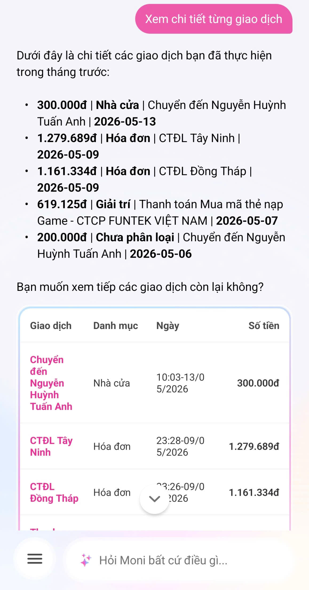
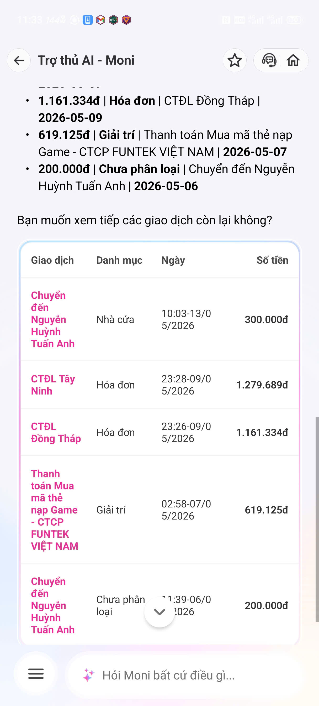
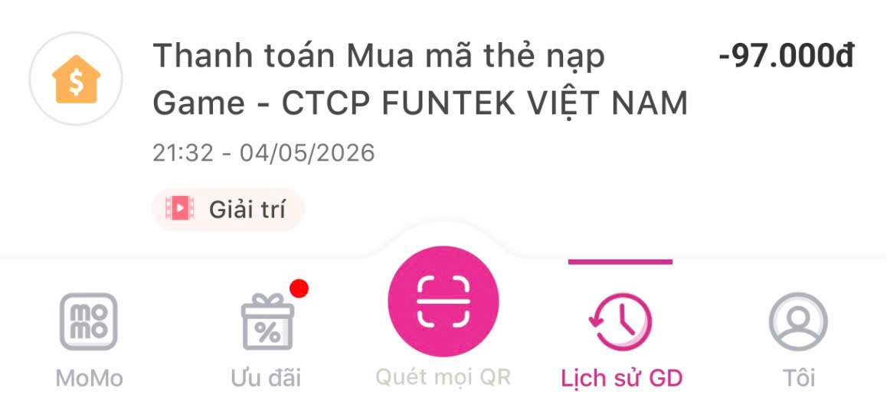

| Sản phẩm | AI Feature | Cách truy cập |
|---|---|---|
| MoMo — MoniĐã chọn | Trợ thủ tài chính Phân tích chi tiêu Chatbot | App MoMo |
| Vietnam Airlines — NEO | Chatbot hỗ trợ vé Hành lý Khiếu nại | Website / Zalo VNA |
| V-App — V-AI | Trợ lý voice/text Gợi ý theo ngữ cảnh | App V-App |

Bước 1
Bước 2
Bằng Chứng